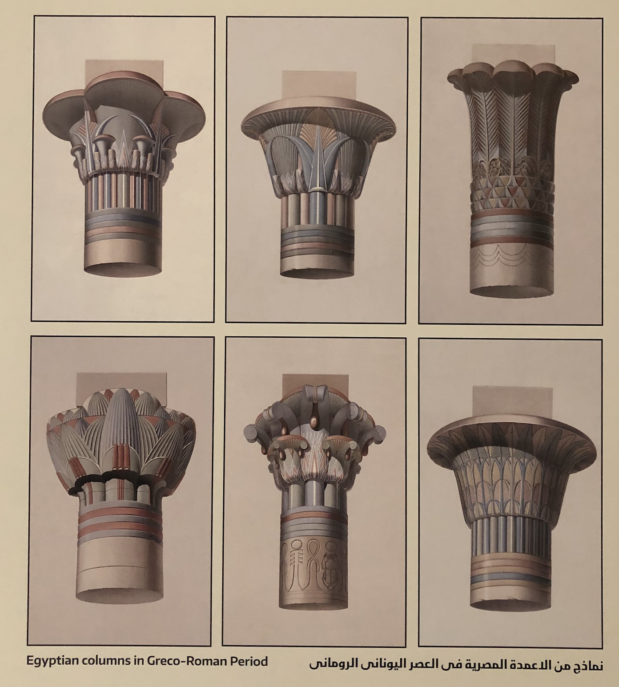
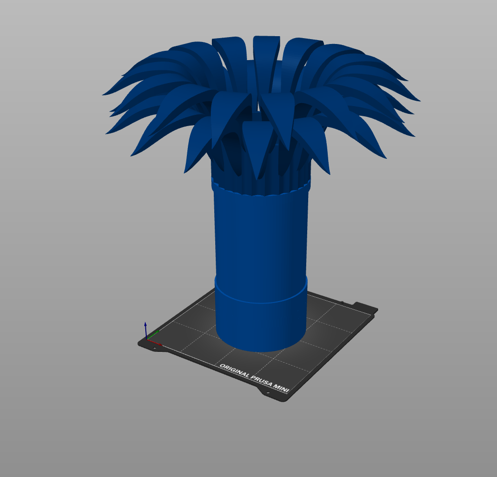
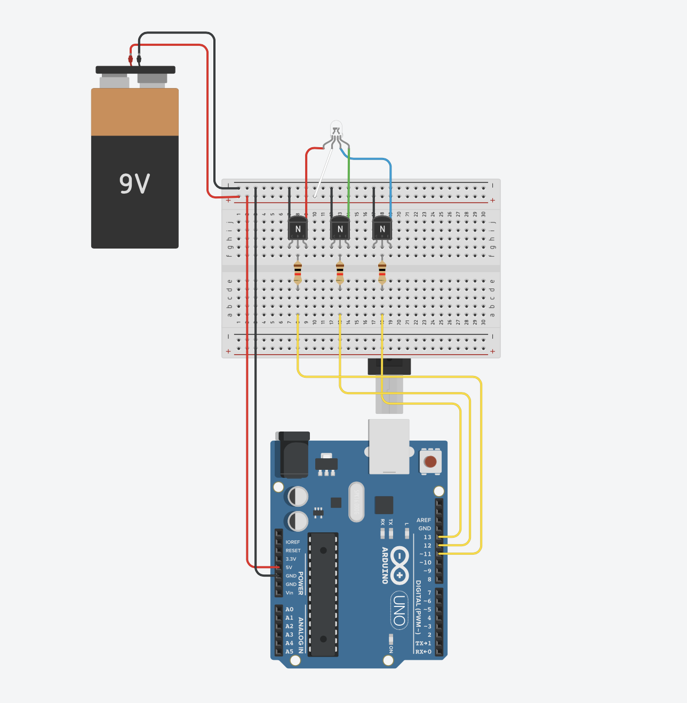
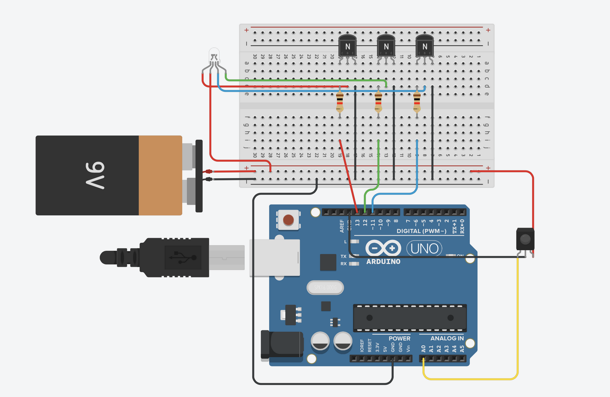
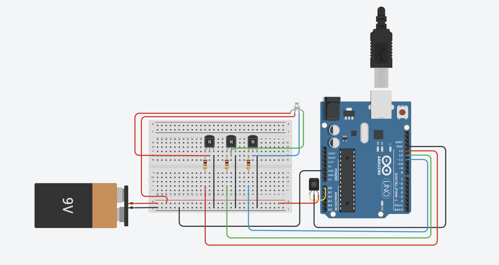

When we were made aware of this final assignment, I had a few ideas. The first being something that would aid fundraising, since it something I do often, an upgraded car or something that really intrigued my, synthesizing chromesthesia (which is a form of synthesia where sound involuntarily evokes an experience of color, shape, and movement). After some thinking, and the first few assignments, I decided to futher develop this idea of chromoesthesia.
My inital idea was to recreate chromoesthesia within sunglasses, but quickly realized this would be nearly impossible due to the size of the microcontrollers, let alone the rest of the circuits: so came the idea of the lamp (I know, not the most creative name but its a work in progress).
My lamp uses an accesible web interface where the user can select from two modes: color picking or sound sensitive. Through this web interface, the lamp can be controlled from almost anywhere in the world with a Wifi connection. The nature of this project is purely aesthetics, and potentially a viable light source.
Without further ado, take a look at my work:
The Lamp incorporates one major circuit at the very base. Using the ESP32 Adafruit Feather (Huzzah) it connects to Wifi, which then uses firebase to set up a useable web interface accesible to most users. The circuit then involves many different components such as a microphone module, transistors, resistors (discussed later in detail) to be able to carry out both functions mentioned in the "Why a Lamp?" section. 
Since it was of high importance to me that the lamp be aesthetically pleasing, I made sure I planned out the actual look of the lamp itself. Since I've had to create this final project away from home, instead in Egypt, I took serious inspriation from there: more specifically some of the artifacts I've seen while here. For this Lamp, I wanted to center it around the architecture of the Greco-Roman period.
The Greco-Roman Period took place from 332BC to 396AD so alot of Ancient Egyptian architecture took place during this period. To the right you can see a photo of some columns from the National Museum of Egyptian Civilization.
With my eye set, I began to design my lamp. Using Fusion 360, I began to figure out how to use it to create something similair to these columns. While the base of the column was easy (a simple sketch of a circule and extrude), the top of the column was alot more confusing, especially since Fusion is made more for CAD then 3D Design, so there was no simple 2 step solution. Instead, I thought what skill would be similair to this and watched this tutorial on how to create flowers on Fusion, and applied it to the top of my column. Then came the middle. Since I wanted to be able to see the colored lights coming through I used frosted glass to complete my lamp. Below, You can see my final product, as well as download the 3D, STL, and gcode file.

However, due to last minute restrictions due to Covid-19, I was not able to gain access to a 3D Printer; however, I was still set on achieving a similair effect, so I got to work using cardboard, airdry clay and hotglue. Initially starting with making two trays of carboard of 15x15x5, and then using clay to acheieve the spherical look.
For the top, I couldn't use clay as it was extremely heavy (which would likely cause it to break), so instead I used paper to acheive a similair effect to that which I had originally planned to achieve. Finally for the middle, I used laminating film to achieve the look of frosted glass while still giving me flexibility to bend it into a cylinder.
Below you can see my (almost) finished physical product. While it didn't look the best, I knew my arts and crafts skills were not the ones being tested so I tried not to spend more than a few hours on it. Instead I worked on building the infrastructure, such as using wooden dowels to create support beams, and toilet paper roll which I then wrapped my LED strip around. The top of the lamp was basically empty since the LED strip only had to connected at one side to complete the circuit.
Admittedly, I didn't work on this assignment as efficiently as I could have but I wanted to ensure everything ran as smoothly as possible and worked well. So I worked on the ins and outs of both of my modes seperately, then later combined them to complete my lamp, so I will explain both as such.
For this circuit, I wanted to be able to use a color wheel to choose any color on it, which would then show up on my LED strip. For this circuit, I went out and bought new RGB LED strips which allowed to me to control the colors individually. Using this tutorial for inspiration, I created a similair circuit which was instead controlled using a color wheel, and using the huzzah to use Wifi instead of using bluetooth to control it from a phone.
Below you can see my schematic for my circuit. Within my circuit, I used an RGB Led strip (instead of the LED shown), which was connected to power, and then the emitter pin of an NPN transistor each for the red, green and blue. (With collector connected to ground) and then the base pin connected to a 1k resistor, all connected to pins D12, D13,and D14.

Below is the Arduino code I uploaded to my circuit. The basic idea I found from this tutorial but I used segements of the arduino code from the class page to set it up with firebase, however designed my own interface for the HTML code. You can try it out here!
The way the code works is that when the color is picked, it automatically provides the color with a Hexadecimal value on the web interface, which then gets translated into seperate values of R, G, and B, which are then sent to the microcontroller where it goes through the circuit described earlier, using the transistor as an electron valve (aids in selecting the integer value of the color (number of electrons sent to each wire to create selected color)) where it finally outputs the selected color.
As for this circuit, I had already made a much simpler version in week 8 using the Metro M0 express; so I didn't expect this circuit to be as difficult as i had found it to be. For some reason i ran into issue after issue. Whether it was the microcontroller or just general circuitry, I ended up having to go out and purchase a new sound sesnsor, and bought two more microcontrollers, the Arduino Uno and Nano R3, just to keep trying it. Moreover, all the tutorials online were only for adressable LEDs and not for RGB LED Strips, meaning this circuit was a long series of trial and error.
So, I first tried a few basic circuits, using the Arduino Uno. In this circuit I only had the sound sensor attached to a small breadboard along with the addressable LED (after much struggle with the wires falling off and many burns from attempting to resolder it). I used this circuit to familiarize myself to the concept one again, and gain some confidence in what i was doing. Below you can see two videos of its receptiveness when knocking and tapping on my desk.
For this circuit, I also used the Huzzah ESP32 CAM, a 9V battery power, 3 1k Ohm Resistors, and 3 NPN transistors. I attempted to keep it somewhat consistent with my previous circuit so it would be much easier to combine for my final lamp. In this circuit I connected my RGB Led Strip to the base of an NPN transistor, with the collector connected to a resistor and the emitter to ground. Each resistor is then connected to a digital pin in the Huzzah board. On my Huzzah, I used pins 13,12 and 27 since they were next to each other (and I couldn't find any spare wiring). (I couldn't find a sound sensor on tinker cad so i used an IR sensor)

This circuit works similairly to my previous one, but instead the microcontrollers recieves its values from the sound sensor automatically instead of a human input. The sound sensor is connected to an analog input so the volume levels the sound sensor it recieves are taken in as analog data and then translated into digital values corresponding to each color, changing with the music as the volume/ dynamuic changes.
One thing I didn't expect with this circuit is calibrating the sound sensor. I used the Arduino Microphone Module Sensor KY038 which acts as a sensitive capacitance microphone for detecting sound and an amplifier circuit. So I had to change the sensitivity using the potentiometer on the module. This changed the analog output voltage when the level of intensity received by the microphone.
As for the user interface, I made a simple on and off switch which signals for the microphone to turn on and therefore switches the mode from color picking. I used firebase to make the web interface, following the firebase tutorial from week 9 of the class webpage. Below you can find my web interface, as well as my Arduino code. I used this page for inspiration with my code, specifically setting different values for the each color.
Combining the two physical circuits was relatively simple; however the coding is instead what confused me. I used one circuit but had to combine my firebase consoles, although I would have rather had kept my firebase consoles seperate for ease. While I preferably would have rather simply had two seperate circuits, I only had one ESP32, making the coding more difficult than expected.
As I had already designed my two circuits to be somewhat similair, creating a new functioning circuit was extremely simple. Ultimately, since both circuits used alot of the same components, it took some simple recircuity and a few component relocations. Below is my new circuit was allows the functions of both of my previous circuits.

Then came the coding aspect. Below you can find my code for the lamp. I ended up creating one final new firebase server which stored everything I needed. I ended up needing to add a completely new section which motioned to turn on the color picking circuit instead.
Here are some screenshots from my firebase server in a slideshow, the first two screenshots from the firebase consoles for each seperate circuit, and then finally my final lamp console.
While there are a few issues with my lamp (such as it sometimes lagging or issues with the code which cause it to fault sometimes), I am still extremely proud of everything I've achieved and extremely happy with happy this project has turned out. One last final time, I'd like to thank both Nathan and Victoria for all their help! I leave you once again with my Demo Video (and a few extra full length videos below it:) ).
created with
Website Builder Software .